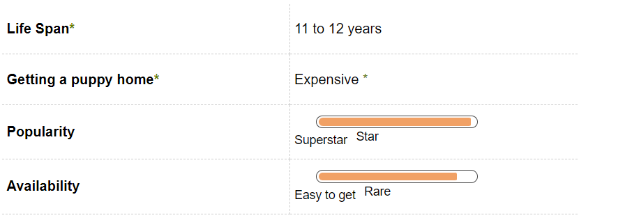
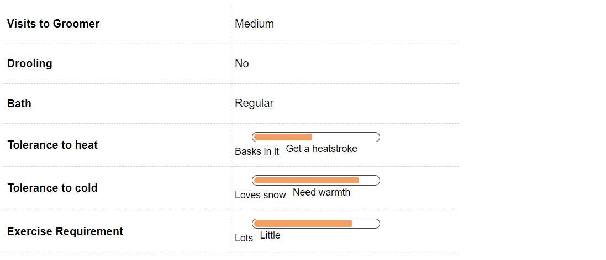
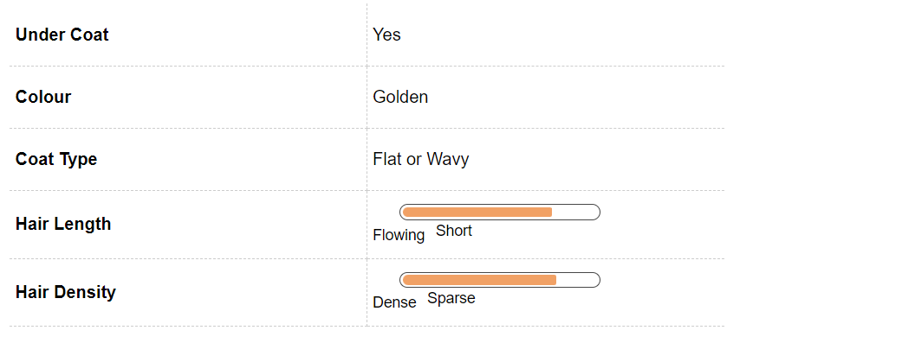
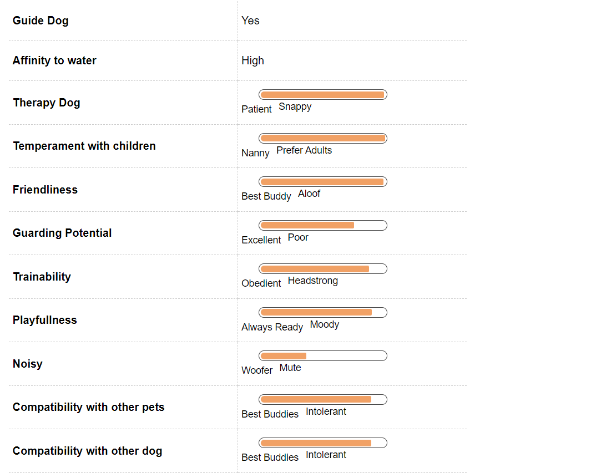
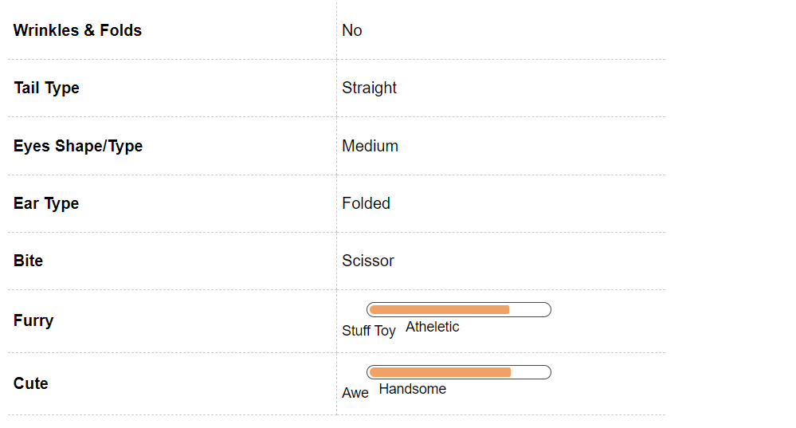

Golden Retriever Dog Breed Information

Introduction
The best introduction a Golden Retriever could be nothing less than a big bundle of joy. This starry breed staring in movies like Air bud has been a favorite of both the movie stars and the movie watchers. Golden Retriever is a playful breed which loves playing around and being jolly. It’s a perfect breed to have around someone who is playful and high on energy. The name Golden Retriever comes from the fact that this breed loves retrieving things and playing the game of catch and it is Golden in color. This breed is also famous for being a helpful dog who is used for things like blind people assistance and being a guide dog.
This breed also has a fondness for water and loves playing in water. This breed is one of the most popular breeds across the world and this popularity is associated with its friendly nature and cool temperament. This breed is fond of exercise and should be made to exercise as much as possible. This breed is also of a strong build and has a beautiful coat. The origin and history of this dog can be traced back to Scotland around 1850s. This breed is one of the kindest pets that can be kept, its nature is a huge plus and its high spirits keeps the owners in high spirits all through the day.
How can anyone forget the adorable team of Golden Retrievers in the movie Air Bud? If you were awe-struck at how cute Golden Retriever puppies look then you will certainly be inspired by the many inspiring characteristics of these dogs when they are adults. Fondly called Goldens, these retriever dogs are one of the most popular pets in the world. They are easy to train breed, love their families and their zeal to please their owners makes them one of the most perfect pets to have at home.
History
This overly friendly dog originated some time around 1860 in Scotland by Sir Dudley Marjoribanks or fondly known as Baron Tweedmouth, an ardent hunter. As the name suggests, there were specially breed to retrieve ducks and fowls during hunting.
There have been two theories about the origins of this majestic breed. The first theory is how this breed has come from some breed of Russian Circus dogs brought by some English Gentleman. They were taken to some place in Scotland and they used to work on an estate.
People were impressed by this breed and they were bred with some sandy colored blood hound and hence this medium sized breed was produced.Lord Tweedmouth is said to be the originator was this breed and the other theory is that he found a yellow Retriever and bred him with a tweed water spaniel which resulted in the creation of this beauty that is known by the name of Golden Retriever. The reason for Lord Tweedmouth’s breeding of this breed was to develop a breed which could adapt and thrive in the Scottish weather. Nous and Belle were the two dogs which gave birth to this breed. The name of the firstborn of Nous and Belle was Crocus. The earliest known jobs that this breed used to do was be a gamekeeper. He was also a Gentleman’s game keeper. Kennel club first admitted this breed in the year 1911 and was called Retriever – Golden or Yellow. This breed is also famous for being a great hunting partner.
Baron Tweedmouth developed these majestic dogs by breeding the existing retrievers and water spaniels. After the hunter shot, it was expected that they would run to retrieve the fowl or duck from water and grassland to their owner. They were given soft mouth as an essential characteristic for this work, so they don't damage the hunted game.
Unique Aspects
Goldens are one of the best family pets to have, they are the lowest ranking barkers. So, no complaints from the neighbors about the noise level. They are one of the freshest smelling dogs as they do not suffer from bad breath, which is a common problem among dogs usually. They have been given an especially soft mouth that helps them to even hold a raw egg without breaking it, perfect to slightly hold the hunt in their mouth.
A near perfect dog, Goldens make excellent indoor pets, be it with children or elderly; or a house with other animals. Their exemplary obedience level and intelligence have won them many laurels over the years.
Fun Trivia
It is unlikely to find any other breed that has been as widely publicised in the media as the Golden Retriever dogs. So much so, that a lot of celebrities have selected this breed over others as a companion. They are also the face of Pedigree, arguably the most popular dry kibble brand in India.
Here is a small list of movies and celebrities that you share your pet with among many.
Movie Character
Air Bud is the first name that comes to mind when we talk about Golden Retrievers. After all, who can forget that cute little athlete of a dog. Some of the other movies that include Golden Retriever as the main character include Christmas Tail, Homeward Bound - An Incredible Journey, Golden Christmas and The Retrievers and these are just a few to name. In Bollywood, a Golden played a major role in the Hindi movie ‘Thoda Pyar Thoda Magic.’ Another Golden became highly popular on the TV show 'Big Boss' who came in as one of the house members in the season 2014.
Celebrity Golden Retriever owners
Although the list of celebrities owning Golden Retrievers is inexhaustible, we can name some prominent celebrities who have enjoyed the companionship of these loveable pets.
Popular personality Pamela Anderson is known to have one and Jackie Chan owns two Golden Retrievers as well. Singers Ricky Martin and George Michael have one each. Former US President Ronald Reagan had a Golden as the 'First Dog'. Present Hollywood superstars Ryan Reynolds and Ashton Kutcher are proud owners of Golden Retrievers as well.
Closer home, actor Boman Irani has a Golden Retriever, Isha Koppikar has a Golden named Mowgli and Arshad Warsi has one named Betty Boo. Not to forget Zayed Khan, who has not one but two Goldens. And these are just a few of the confirmed names we can mention.
Vital Stats:
Dog Breed Group:
Gundog
Height:
22 - 24 Inches
Weight:
24-36 kg
Life Span:
11 to 12 years
Pros and Cons
| Pros |
Cons |
|
This breed is undoubtedly one of the most lovable breeds to have around. They love jumping around and playing with you. This is also a gentle breed who has a calm but playful temperament. It is also a breed which learns quickly, it can be trained fast and effectively. It is a smart breed, picking up things quickly. This breed is also great with kids, always playing with them and keeping spirits high. These guys love cuddling, they will cuddle up with their owners anytime and anywhere. This is a happy breed who likes keeping everyone around it, happy.
|
There is a lot of hair that comes with this breed, there is hair everywhere with this breed in the house. Dog hair will be a permanent accessory with this breed. Shedding can be a problem. This breed also needs a lot of love and affection, it is a constant attention seeker for attention and it will sulk if it doesn’t get love. It also loves chewing so finding your socks in its mouth can be a dampener. The playfulness can get a little out of hand.
|
Golden Retriever Maintenance & Effort

Grooming
Grooming needs of this breed are on the higher side. This double coated breed comes with a lot of hair which require regular maintenance and care. Regular brushing will reduce hair fall significantly. The undercoat of the Golden retriever protects it from all seasons, during winter the undercoat grows to protect the breed from the chill of the winters and the undercoat gets shed during the summers to keep the breed cool during the scorching heat. Regular brushing reduces the hair fall significantly. The breed loves water so bathing it is not an issue, but use good quality shampoo to wash this breed. This breed needs regular brushing, but using a good quality brush is a good option. This breed requires undercoat brushing also, which needs to be done on a regular basis. This breed grows nails quickly and regular nail clipping is important for this breed. The ears require cleaning and should be cleaned at regular intervals.If you want to maintain that beautiful coat of your Golden then it will require regular grooming. You have to brush their hair regularly, a work best bestowed on the children of the house so they develop a stronger bond and sense of responsibility. You can use a de-matting comb to remove the coat of all knots. If brushed on regular basis it will ensure a smooth coat. A slicker brush can be very useful in the purpose.
The coat of this breed is very hairy and generally golden in color. It is wavy in quality and mostly water resistant. The undercoat is soft in texture and protective in nature. A coat shouldn't be too long and should be trimmed regularly. The shedding is not too much rather it sheds hair occasionally.Golden Retrievers have water resistant outer coats and a thick undercoat, which just needs to drip dry. They come in a variety of golden shades ranging from the whitish golden to a deep gold. If you have a puppy then the ears of the pup will be a good indication of the color your adult pooch will grow up to be. They generally shed hair in spring and fall so be ready to have some dog hair on your clothes and upholstery during this time.
This breed generally comes in different variations of Golden colors. There are as many as shaded of golden as you may find in a cloth shop. There are generally color differences between the pup and the adult golden retriever. The coat might be dark golden and light golden or the numerous variations in the between.The ears of the golden require special attention at all times. Due to the length of the ears they are very prone to wax accumulation, which needs to be cleaned on a regular basis. Also ensure to regularly check for infections as they are water lovers. A pungent smell emitting from the ear canals is tell-tale sign of ear infection.
Feeding and Nutrition
Golden Retriever is one breed which needs proper nutrition a proper time. Healthy food is directly related to their health. Different amounts of food need to be fed to this breed at different times of its life. A young Retriever needs to be fed approximately 3 times a day and an adult should be given food 2 times a day.
It is important that this breed be fed food at a fixed time each day and free feeding should be strictly avoided. The food should not contain substances like BHT, Ethoxyquin, propylene glycol, BHA, or sodium nitrate. The food should be rich in meat and at the same time should not contain bad fats. The food should be devoid of artificial components and at the same time shouldn't contain sugar. The weight of this breed needs to be managed in a way that it doesn't become obese. Feeding this breed twice a day is more effective than feeding it once a day as it reduces bloating and prevents obesity. The calorie requirement for this breed based on its activity should range between 1000-1700 calories a day. Younger Retrievers require more calories than their older counterparts.The food to fulfill calorie requirements should be high in fiber also, whole wheat, grains, oats, fruits and vegetables are also good for this breed. Small quantities of animal fats should also be in the meal to keep the coat shining and bright. This breed also requires a healthy balanced diet. A good meal is the secret to a healthy Retriever.
Golden Retriever Hair & Coat

Golden Retriever Health & Care
Common Health Issues
The Golden Retriever is generally a very healthy dog, who will require very few vet visits. They have a tendency to put on weight if not exercised properly. They are also prone to hip dysplasia, a common joint problem with large active breeds that is mostly genetic but can be deteriorated with improper exercise.
If you are opting to buy a pedigreed Golden, then make sure you are well-versed with the health of the preceding retrievers in the bloodline. There are a few lineages that are prone to mast cell cancer, but this mostly sets in a dog after eight years of age.
The Golden Retriever basically lives for about 10-13 years. There are certain diseases and ailments that this breed is prone to. One of the most prone diseases that this breed can have is Cancer, nearly half of the Golden Retrievers end up suffering from cancer. It is generally towards their middle age, that they end up becoming prone to cancer. The cancer treatment ends up costing a lot of money and is also very painful for the breed. Another kind of problem that this breed is prove to are forms of skin allergies, half of this breed ends up suffering from some or the other kind of skin issues such as growths, cysts, tumors, skin infections etc. They are also prone to ear infections etc. Because this breed is active and loves running around, it is prone to wears and tears. It can suffer from Ligament rupture in its hind legs pretty often. This breed is also prone to things like Hip Dysplasia and elbow dysplasia. These orthopedic problems are a huge inconvenience, they cost a lot of money and are quite painful for the breed. The Golden Retriever suffering from any of these orthopedic problems can be crippled either temporarily or in some rare cases – permanently also.
This breed is also prone to heart diseases, up to 15 percent of Golden Retrievers end up suffering from heart problems. The most common heart problems that this breed has are sub-aortic stenosis and cardiomyopathy. This breed is also prone to seizures also known as epilepsy. About 7-8% of the breed is affected by this. Cataracts is also a major cause of concern in Golden Retrievers, about 13 percent of the population suffers from Cataracts. The most vulnerable age for this breed to suffer from cataracts is either when they are just babies or when they are middle aged, this disease can lead to partial or full blindness. Deep chested breeds generally suffer from conditions where they have bloating and which is generally a result of a gastrointestinal issue. Other conditions that the breed may suffer from are cold nose or snow nose where their muzzle turns cold because of the cold, it’s a non-threatening condition. There is a condition called subvalvular aortic stenosis which generally larger breeds are more susceptible to. Under this condition the blood vessel that carries the oxygenated blood from heart narrows down. Over a long period of time, the heart has difficulty pumping blood which can lead to death. This condition doesn’t get diagnosed easily as one of the most common symptoms is lethargy, the cause of which is difficult to figure out. One way to prevent this from happening is by regular checkups of heart.
Similar to humans, an older Golden Retriever is prone to cataracts which is again a genetically influenced condition as well. Along with this, a lot of Goldens are prone to skin allergies, so be make sure you are in touch with an experienced vet and a seasoned groomer for getting tips on the maintenance of their lustrous coat.
Von Willebrand disease or commonly known as VWD is another disease that this breed is prone to. It a form of genetic blood disorder. Von Willebrand factor is a clotting protein whose deficiency leads to VWD. The symptom of this is that the Golden Retriever who has VMD will have excessive bleeding when hurt. In a more advanced stage there can be internal bleeding and there can also be blood in the urine.
Luxating Patella or loose knees is also something that affects this breed. As the name suggests it suggests a condition where the knee cap gets displaced. It can be recognized when the Golden Retriever starts limping, sits in weird positions etc.
Low thyroid is when the Golden Retriever starts having hair loss, flaky skin, it starts gaining weight, there are ear infections etc. This happens when the thyroid producing glad is not producing enough hormones and the immune system turns on the thyroid gland.
Hip Dysplasis is also pretty common condition where the breed will have a problem in performing functions related to the joint. There will be deformed socket and joint. This condition is quite painful for the breed.
Golden Retriever Behavior

Temperament
One of the most ideal breeds to share a home with, especially if you have children or are a first time owner. This dog will make best friends with anyone in seconds while making sure they are the centre of attention. With their antics and attachment to human beings they will never be further than an arm's length so it is always convenient for humans to pet them.
Very loving, highly playful and amazing with kids, the Golden Retriever is a high-energy dog. This means if you want a calm, well-behaved dog inside the house; you will need to supply them with ample daily exercise. They are not revered as good watchdogs because their guarding instinct is almost negligible. It is quite likely that an intruder will be welcomed by your Golden with a wagging tail excitable disposition.
Environment
The Golden Retriever is a very high energy dog that will do okay in an apartment provided there is a medium sized yard in the vicinity to run around. Being rated as the lowest ranked barkers, this breed is ideal for a neighbourhood that does not take too well to dogs.
Like all retrievers they love games involving balls and frisbees. Throwing around such toys is surely going to tire them out if you are an urban owner with little time to spend with them. Golden Retrievers are extremely active dogs so draining out their pent up energy is highly recommended with daily exercise of one hour minimum. They are excellent swimmers and really enjoy being in water, which is certain to tire them out for the day.
The breed is relatively tolerant to both hot and cold weather. There are primarily two kinds of Golden Retrievers - American and British. The only notable difference between the two is that the American variety is leaner and a little larger than their British counterpart but both the varieties are suited to survive in almost all weather conditions. They are bred to adapt to almost any environment, giving them conditional versatility.
Training & Intelligence
Golden retrievers are one of the most trainable dogs around because of their high intelligence and love for human attention and companionship. But getting very smart dogs for ease at home can also back-fire as they can end up outsmarting the humans in the house. With consistent training and guidance they have the potential to reach the highest capacity for a dog. That is why Golden Retrievers are preferred as service dogs around the world like mobility assistance, seeing-eye and many more.
Before getting ahead of ourselves, one need to come up with creative ways of training these dogs. In addition to easy commands like 'sit', 'down', 'come' and 'stay' teaching them basic manners, both indoor and outdoor is advisable. Maintaining their calm state of mind is ideal for such over-zealous puppies. Always remember to praise desirable behaviour, even if it does not seem extraordinary to humans; appreciation goes a long way with dogs. They were the first ever obedience champions in the AKC show.
Golden Retriever Breeding
Procreation
Golden Retrievers are one of the easiest breed to handle. There is hardly any complication in its breeding. The only thing you have to think about is giving the adorable puppies up for sale or adoption to the right humans. An average male and female Golden attains sexual maturity anywhere between six to nine months of age. However, this does not imply that such a young puppy is ready to breed a healthy litter.
A dog takes around 18 months to reach his full height and structure. It is advisable to breed your dogs after at least two years of age. If you are first timer at breeding then taking a vets care is advisable. You just sit back and enjoy the company of six to nine adorable little puppies, an average litter size of the breed.
Puppies
Golden Retrievers are very active, as already established. So do not expect anything less from your puppy. They will have their bouts of random hyperactivity and then long hours of sleep. Many a times their behaviour becomes unpredictable. It is highly recommended for owners to start training their pup from day one, especially puppy toilet training.
Giving them a fixed set of rules around the house will help when they get older and stronger. Like any puppy, their teething phase will be stressful and they will not leave any object in the house without teeth marks, even humans. Hence, guiding them with the right toys and proper training will aid in managing most of these problem behaviours.
Golden Retriever Appearance

Body
An adult Golden Retriever will have a sturdy body and laid back shoulders. It has webbed feet, which enables it to wade through lakes and ponds. The breed has been blessed with dark brown oval eyes and folded ears which makes them the adorable pets they are today.
The teeth meet in a scissor-shaped bite. This is a medium-large breed and an adult male dog can weigh anything between 24 to 36 kg with an average height of 24 inches. The average lifespan for this breed is 10 to 12 years.
They have a dense water-resistant coat with a wavy or straight outer coat. There will be untrimmed feathering on ends of the body like underbelly, back of legs and underside of tail. Coat colour of these dogs ranges from creamy white to rich dark gold.